Spatial analysis
How the tissue is organized: which cell types are neighbors more or less often than chance, how far apart they lie and at what scale they gather, and what fills a region or gathers at its edge, each number with its cells on the tissue.
Which cells are neighbors
The Spatial view asks how the tissue is organized. Every such question starts from which cells count as neighbors: a graph joins neighboring cells, by one of four definitions.
- Delaunay triangulation: each cell joined to the cells around it, by the triangulation of the cells' centers, however dense the tissue. Across a tear, a hole or the tissue's edge it would join cells far apart, so edges longer than the longest edge (50 µm by default) are left out.
- Nearest neighbors: each cell joined to its k nearest (6 by default), and so to any cell of which it is among the k nearest. Every cell has neighbors, but at the tissue's edge, or alone, they may be far.
- Within a radius: cells whose centers are at most the radius apart (20 µm by default). The same distance everywhere, so dense tissue gives cells many neighbors and sparse tissue few or none.
- Contact: cells whose outlines touch in the segmentation, with the boundary they share. A gap lets cells that nearly touch count as in contact; a cell between two others still keeps them apart.
Choose the segmentation (the default first) and the cells: all of them, a QC filter's (the instrument's segmentation), or only those in regions you drew. Cells a review excluded from analyses are always left out, and the view says how many. Build the graph builds it as a job; it is kept as an artifact with its definition and the cells it was built over, and the same definition over the same cells gives the same graph on any computer.
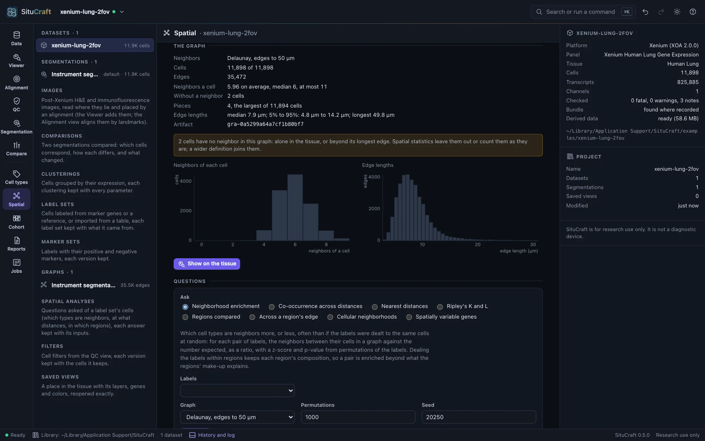
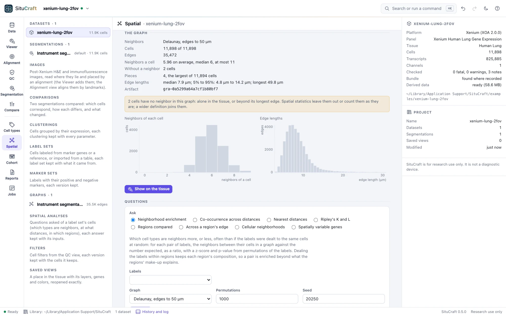
Each graph says what it holds: its cells and edges, how many neighbors a cell has, the cells without a neighbor (alone, or beyond the radius or the longest edge), how many pieces it falls into, and how long its edges are, with histograms. Check these before using a graph: a radius that gives most cells dozens of neighbors, or leaves many with none, is the wrong radius for this tissue.
Show on the tissue draws the graph's edges over the cells in the Viewer (the Cells section's Graph chooses among the graphs of the segmentation drawn). Edges are drawn once you zoom in far enough to read them. Click a cell: its edges turn yellow, and its inspector lists its neighbors, nearest first, with their distances (and, with the cells filled by a label set, their labels); click a neighbor to go to it. Saved views keep the graph.
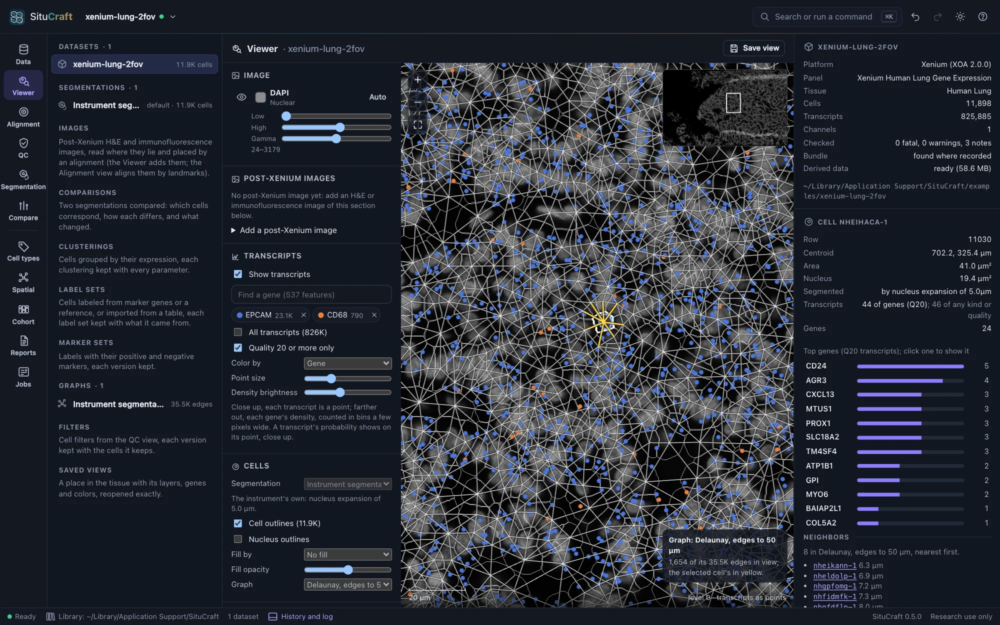
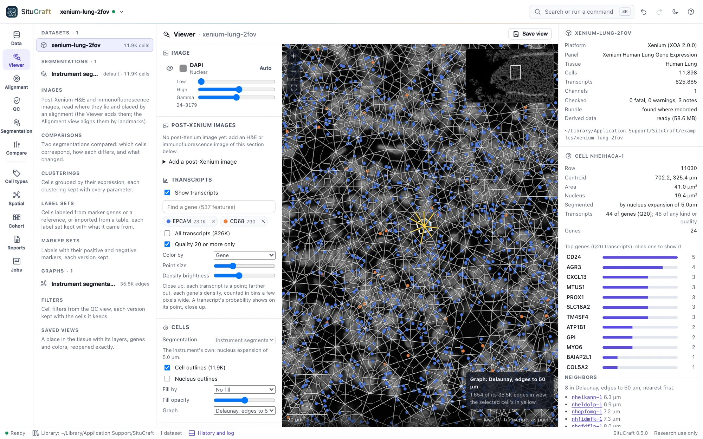
Which cell types are neighbors
Under Questions, ask a question of a label set's cells (the Cell types view labels them; any label set of the segmentation and any of its levels can be asked).
Neighborhood enrichment counts, for each pair of labels, the neighbors between their cells in a graph you built, and compares the count with the number expected if the labels were dealt to the same cells at random. The expectation is computed exactly; the permutations (1,000 by default, seeded) say how far from it chance alone strays.
- The ratio of found to expected is the size of the effect: 2× means twice the neighbors chance gives. The heat map colors each pair by it, red for more, blue for fewer, and marks the pairs whose adjusted p-value is below 0.05.
- z and the p-value say how unusual the count is in this section. The p-value is the share of permutations at least as far from the expectation (never below one over the permutations plus one: with many labels, use more permutations), adjusted over the pairs by Benjamini and Hochberg's procedure.
- Deal the labels within regions to ask whether two types are neighbors beyond what the regions' make-up explains: a tumor region full of tumor cells makes tumor cells each other's neighbors, and dealing within it keeps that.
- With a contact graph, neighbors can be counted by the boundary the cells share; the contact fractions then give each label's boundary by the label it touches.
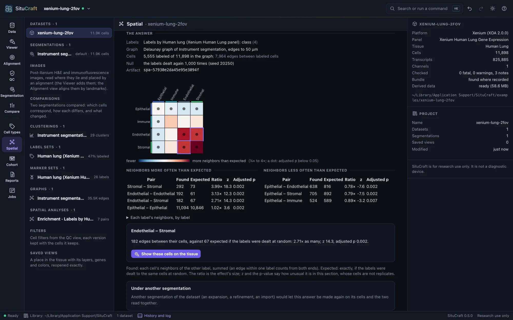
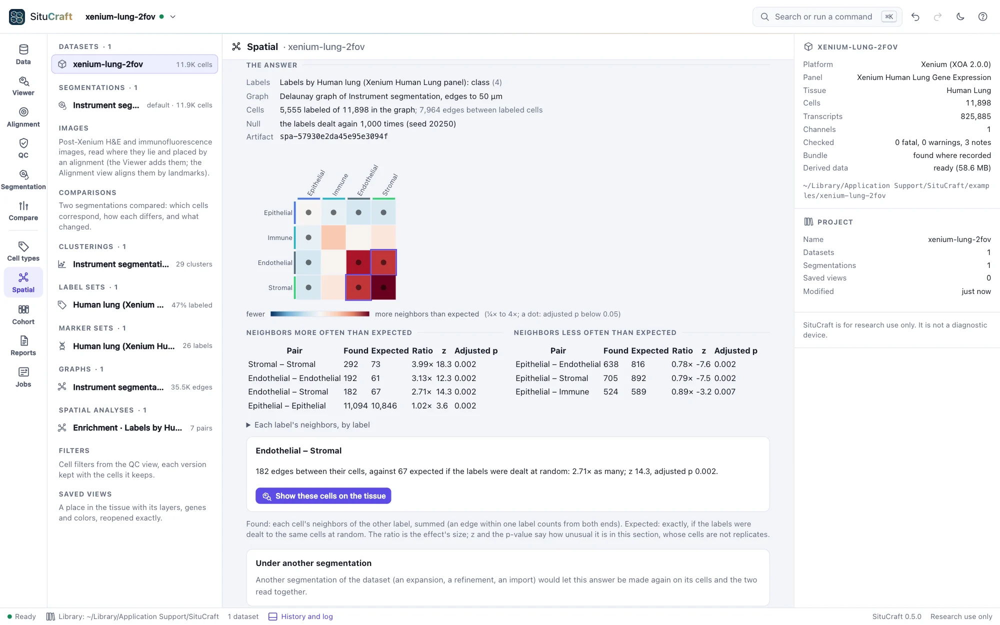
Click a square, or a row of the tables, for the pair's numbers in words; Show these cells on the tissue opens the Viewer with the cells filled by their labels, the pair's cells (those with a neighbor of the other label) highlighted, and the edges between them drawn in color over the graph.
Co-occurrence across distances asks, from one label's cells, how much likelier each label's cells are within a distance (10 to 150 µm by default) than any cell is: above 1, found that near more often than their share. It counts the pairs within each distance as Squidpy does, or, to read each distance on its own, the pairs since the distance before. It is descriptive, without a test. Choose a label and a distance to show those cells on the tissue.
The worked example Which cell types are neighbors asks it of the Breast section's classes and then its lineages, and shows each pair's cells on the tissue.
How far apart, and at what scale
Nearest distances measures, for each label's cells, the distance to the nearest cell of each label (another of their own, for a label with itself), searched up to a reach (100 µm). The median is compared with the median when the labels are dealt again to the same cells: a shorter median says the two lie nearer each other than their numbers explain, a longer one that they keep apart. The heat map is red where nearer, blue where farther; it is not symmetric, since a rare label lies near a common one more surely than the other way. Choose a pair for the distribution of its distances (the share of cells whose nearest lies within each distance) against chance's envelope.
Ripley's K and L count how many cells of a label lie within each distance r of a cell of the same or another label, in a window: the tissue (its cells' footprint, with gaps narrower than twice the closing radius filled; holes such as airways and the space beyond the section left out) or a region you drew. Cells near the window's edge have fewer neighbors inside it; Ripley's isotropic correction counts each pair as if the circle through it lay wholly inside. L = √(K/π) is a distance, equal to r for points scattered at random, so the curve shows L(r) − r. That line is a reference only: cells cannot overlap and tissue is not uniform. The comparison is with the labels dealt again to the same cells, as a band (the permutations' 2.5% to 97.5%), and a global test over the radii. Above the band, a label's cells gather (or two labels draw together) at that scale; below it, they spread out (or keep apart). Keep the radii below about a quarter of the window's width.
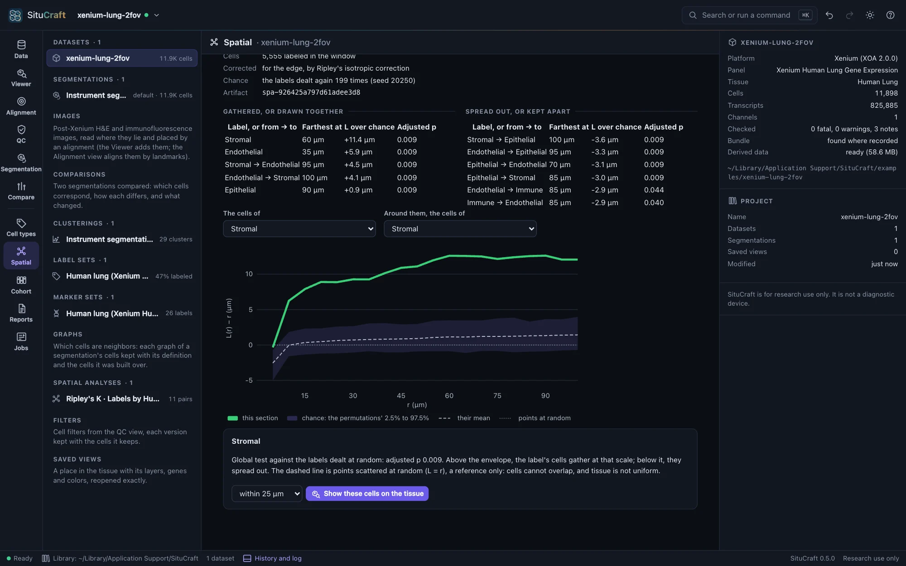
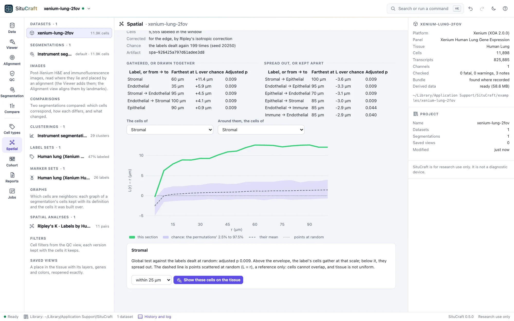
Choose a distance, and Show these cells on the tissue highlights the cells within it of each other.
Regions measured
Two questions are asked of regions you drew (or read from QuPath).
Regions compared counts each region's cells by label, two ways: per mm² of the tissue within the region (a density) and per labeled cell in it (a share). The tissue is the window Ripley's K uses, so a region drawn loosely over the edge of the section, or around an airway, is not diluted by the glass inside it. The tissue in none of the regions is a row of its own. Each number has a 95% interval (Garwood's for a count, Wilson's for a share). Choose two rows to compare them, as each label's ratio with its interval (a forest plot, filled where the interval is clear of 1).
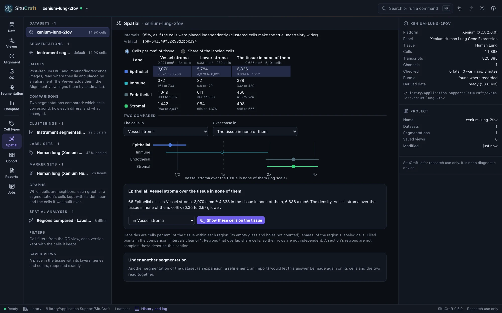
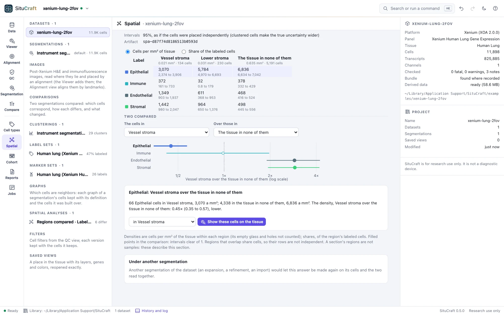
Across a region's edge measures each label's density in bands of distance from a region's edge, every 10 µm from 100 µm inside to 100 µm outside (the deeper and the farther a band each), each band's own area of tissue its denominator. Three zones, as a tumor's core and invasive margin are measured: the core (inside, beyond the margin), the margin (within 20 µm of the edge, either side) and around (outside, beyond the margin, to the reach). A label fills the region when its density in the core is above its density around (the interval of their ratio clear of 1), stays out when below, and gathers at the margin when the margin is denser than both. The profile shows a label's density band by band; a band with little tissue (deep inside a small region) is drawn hollow.
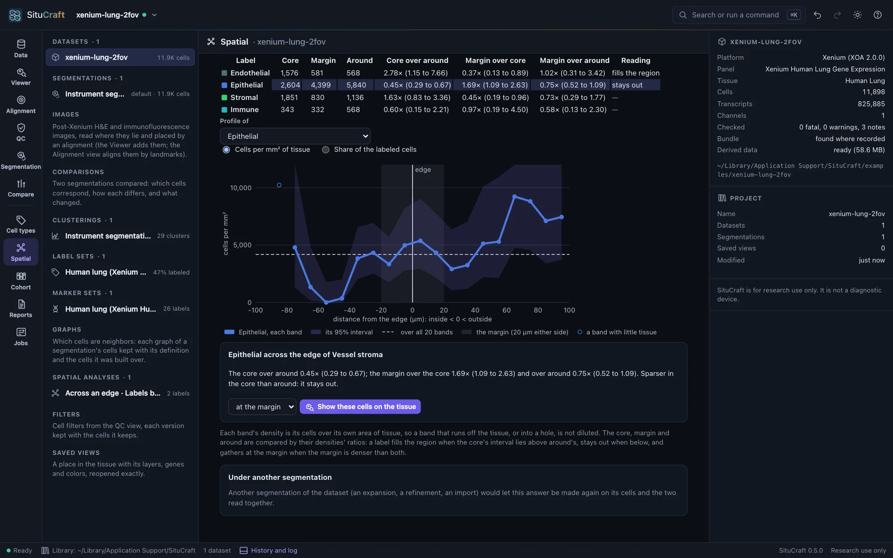
Show these cells on the tissue highlights a label's cells in a region, or in the core, at the margin or around.
The intervals treat cells as placed independently. Cells cluster, so the true uncertainty is wider.
The worked example Immune cells and a tumor's edge draws a region around the Breast section's tumor and measures its immune cells in its core, at its margin and around it.